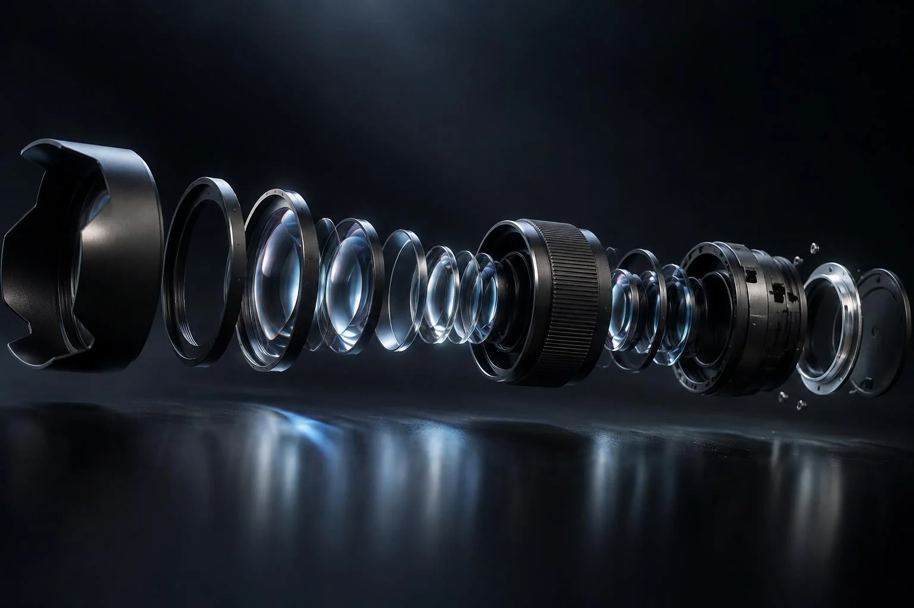

BEYOND RENDERING.
We're building the next generation of product presentation. New technology matters when it makes a product clearer, more tangible and more engaging.

Offered workflow
HUMAN-LED.
TECHNOLOGY-ASSISTED.
AI-Assisted Visualization
AI helps explore composition, visual directions and supporting imagery. It is part of the creative workflow, not a replacement for professional design or product validation.
For commercial product work, scope, reference quality and accuracy requirements are discussed before production. Synthetic imagery is not proof of product fidelity.
Exploratory technology / Subject to feasibility
PRODUCTS YOU CAN EXPLORE.
These directions are under exploration, not a list of previously delivered platforms. Every interactive enquiry begins with a feasibility conversation.
Augmented Reality
Explore a product in a physical space. Asset accuracy, scale, device support and platform constraints need to be established.
Real-Time 3D
Responsive product viewing with potential camera, material and lighting controls. Performance budgets guide the asset pipeline.
Interactive Product Configurators
Explore options and finishes through an interactive product model. Product rules and validated variant data are essential.
Virtual Product Demonstrations
Explain product functions through guided digital experiences. Interaction design begins with the audience and use case.
Your product. A new perspective.